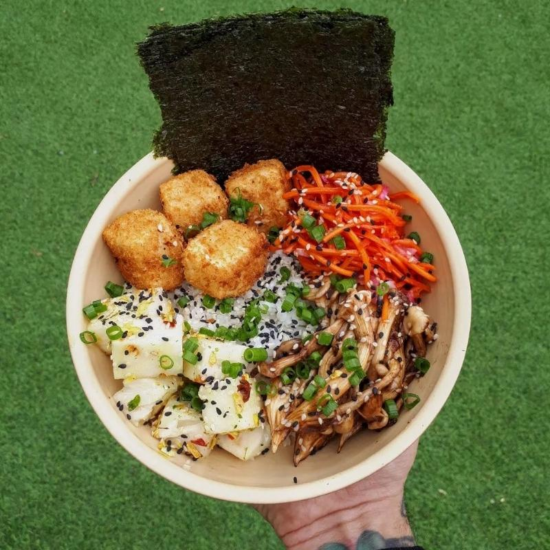

Néctar Vegetais

O Néctar Vegetais tem várias opções para almoço e jantar, além de lanches, doces e um café da manhã bem caprichado aos sábados. Com um ambiente petfriendly e simples mas bem aconchegante! O restaurante agrada o paladar de veganos e não veganos com pratos saborosos e bem montados.
Horário de Funcionamento: Segunda a sexta, das 11h às 15h e das 19h às 23h | Sábado, das 08h às 15h
Endereço: R. Padre Manoel Nóbrega, 67 - Centro
Telefone: (11) 98628-0203